Overview
Three rigged fighters (Capsule, Grandma, Grandpa) trained with PPO in Unity ML-Agents. Each brain controls a 14-joint active ragdoll via a 3×512 MLP. The contest scene lets a player pick any combination of brains or heuristic bots and watch them fight to stay upright.
Tier 1 — 30-second summary
- What is PoBox? A balance-and-walk contest: every fighter is an active ragdoll with 14 driven joints.
- What trains it? PPO with extrinsic-only rewards, 3 curricula (drive strength, shoves, projectile cubes), 15–50 M steps depending on the run.
- What runs it? Unity Inference Engine (Sentis) loads the exported
.onnx, executes the MLP on every decision, and writes joint target rotations for PhysX to follow. - Status today: 3 promoted brains in
Assets/Agents/<Name>/plus 6 historical runs inresults/.
Tier 2 — Component & flow overview
- Model — Active ragdoll driven by
ConfigurableJointslerp drives (14 per fighter). Joint axes are PD-controlled by joint-specificbaseSpring/baseDamper/baseMaxForce. - Agent —
Agent_FighterBoxingcollects 121 floats (root + per-joint proprio + feet + foot-height rays), receives continuous actions, applies them inFixedUpdateonly. - Reward —
Reward_Balance(stage 1) orReward_Locomotion(unified stand-and-walk) add per-step extrinsic reward; product-form geometric mean available as an option. - Runtime — Sentis executes the MLP,
Systems_FighterRig.ApplyActionsmaps the action vector to per-joint target rotations,Systems_Staminaattenuates springs from motor power,PhysXsteps the world at 0.02 s. - UI — UI Toolkit scoreboard, drama camera, crowd audio, announcer, cube thrower — all driven off the referee (
Systems_BalanceContest) events.
Tier 3 — Implementation specifics
Fixed step 0.02 s, solver iterations locked. ActionBuffers.ContinuousActions shape equals Systems_FighterRig.DofCount (active axes across 14 joints, typically 42). VectorSensor writes 121 floats exactly (ROOT_OBSERVATIONS 13 + PER_JOINT_OBSERVATIONS 7 × 14 + FOOT_OBSERVATIONS 8 + FOOT_HEIGHT_OBSERVATIONS 2). LSTM disabled on balance/locomotion; enabled (128 cell × 64 seq) on self-play. PPO gamma 0.999 balance, 0.99 self-play. OnActionReceived computes mean |Δaction| for the smoothness penalty; ApplyActions applies exponential smoothing with α = 1 − e−dt/τ when _actionSmoothingSeconds > 0.
Behavior evolution at a glance
Pipeline at a glance (detailed)

Roster
Every fighter prefab is paired with a brain. Brains can be a trained .onnx (Promoted in Assets/Agents/) or the code-driven heuristic bot (ankle + counter-hip PD). The contest setup menu reads this roster and fills its drop-downs.
Brain: Assets/Agents/Standard/Boxer.onnx
Brain: Assets/Agents/Grandma/Boxer.onnx
Brain: Assets/Agents/Grandpa/Boxer.onnx
Command observation 0 = stand, 1 = walk
Needs opponent obs re-enabled
Init path: results/boxer_balance05/Boxer
Lifecycle & execution loop
ML-Agents ticks the agent before PhysX; actions written in OnActionReceived are buffered and consumed in FixedUpdate. This guarantees deterministic physics while letting inference run async.

Tensor blueprint & actuator map
The MLP takes a flat 121-float observation vector and emits one float per active DOF (≈42). Each action float is mapped zero-centered into the joint's per-axis range, then written as a slerp-drive target rotation.


Sensors & reward tree
Ground-contact sensors distinguish "ground" as any static collider (no rigidbody). Fall sensors are added by the spawner to torso, head, shins and gloves so kneeling triggers the terminal. Rewards are per-step scaled by 1/MaxStep so the −1 fall penalty stays commensurate.


Hyperparameters & trainer specification
Every config in Config/ uses PPO with the same 3×512 MLP and linear-decay learning rate. Differences are in curricula and reward shaping.


Hyperparameter table
| Param | balance04 | balance05 | balance03 | locomotion01 | walk01 | selfplay01 |
|---|---|---|---|---|---|---|
trainer_type | PPO | PPO | PPO | PPO | PPO | PPO |
batch_size | 2048 | 2048 | 2048 | 2048 | 2048 | 2048 |
buffer_size | 20480 | 20480 | 20480 | 20480 | 20480 | 20480 |
learning_rate | 3e-4 | 3e-4 | 3e-4 | 3e-4 | 3e-4 | 3e-4 |
beta | 0.005 | 0.005 | 0.005 | 0.005 | 0.005 | 0.005 |
epsilon | 0.2 | 0.2 | 0.2 | 0.2 | 0.2 | 0.2 |
lambd | 0.95 | 0.95 | 0.95 | 0.95 | 0.95 | 0.95 |
num_epoch | 3 | 3 | 3 | 3 | 3 | 3 |
lr_schedule | linear | linear | linear | linear | linear | constant |
hidden_units | 512 | 512 | 512 | 512 | 512 | 512 |
num_layers | 3 | 3 | 3 | 3 | 3 | 3 |
memory | — | — | — | — | — | LSTM 128×64 |
gamma | 0.999 | 0.999 | 0.999 | 0.999 | 0.999 | 0.99 |
max_steps | 25 M | 15 M | 15 M | 15 M | 15 M | 50 M |
time_horizon | 256 | 256 | 256 | 256 | 256 | 256 |
init_path | — | — | — | — | balance05 | — |